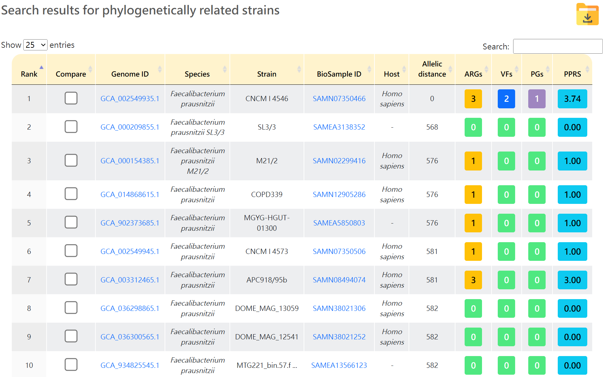
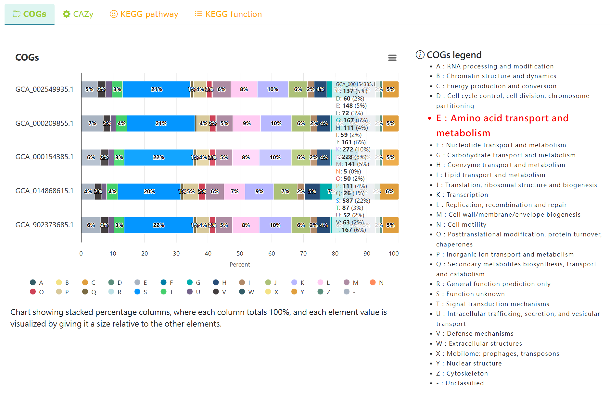

Database search
|
 Select the strains from the database to be compared |
 Compare the COGs results with strains in the database |
Steps
1. Select the strains to compare from the database
2. Provides comparative analysis across four annotation results: COGs, CAZy, KEGG pathways, and KEGG functions.